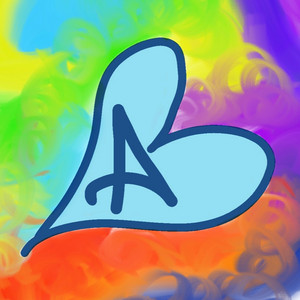
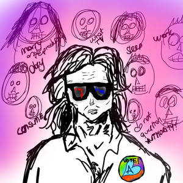
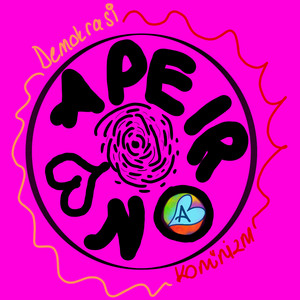
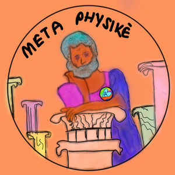
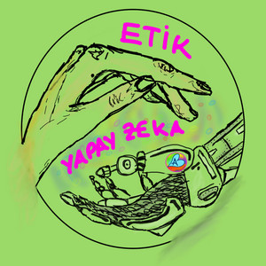
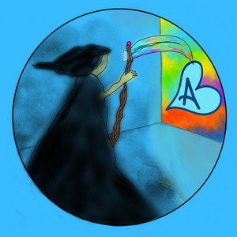
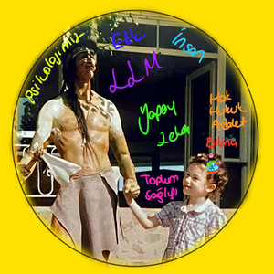

Ana Sayfa / Podcastler
Arşiv — Sayfa 04Mürekkep Saatleri
Yayın Kayıtları
Bölümler burada, Spotify'ın kendi oynatıcısıyla, sitenin içinden dinlenebilir.

Kültür Endüstrisi -tek tip insancıklar mı oluyoruz?-

Apeiron ve Kozmik Adalet Sistemi - komünizm veya demokrasi ilişkisi kurabilir miyiz?-

Metafiziğe Giriş - Aristoteles'in Metafiziği

Yapay Zeka ve Etik

Olumsuzluklarla Yaşayabilmek- Felsefi Danışmanlık Bölümü-
